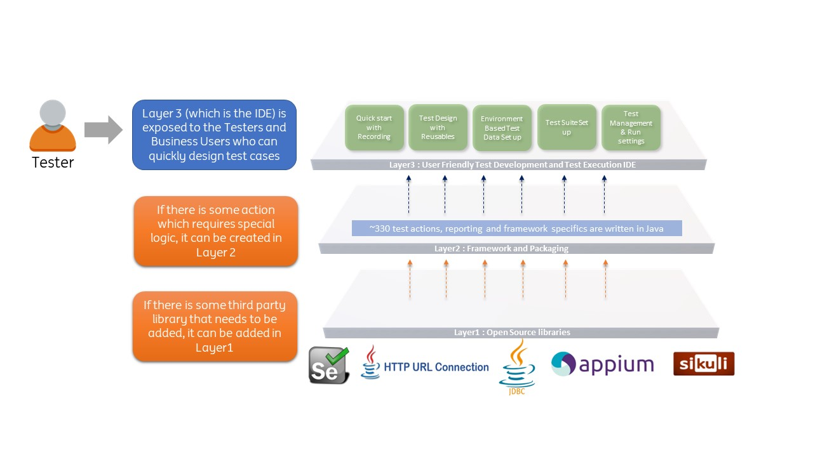

Introduction
CITS is an open-source no code/low code test automation solution that provides a unified interface for all the agile test automation activities such as :
* test design
* test development
* test execution
* reporting
* maintenance
At a Glance
Browser Testing |
API Testing |
Database Testing |
WebPage Performance |
Layout & Accessibility Testing |
Image Based Testing |
|---|---|---|---|---|---|
Uses Selenium |
Uses java HttpURLConnection |
Uses JDBC Driver |
Page and Resource timings report |
Uses GalenFramework for Layout Validations |
Uses Sikuli |
~280 built-in actions |
~25 built-in actions |
~15 built-in actions |
Har Compare | Creates PageDump | Image comparisons |
Local and Selenium Grid execution |
Easy Data parameterisation | Easy Data parameterisation | Har Comparison Report | Auto-suggests Layout Validations | Image Text Extractions |
| Parallel Execution | Parallel Execution | CLI support for Report | Uses aXe for Accessibility Tests |
Image Text Validations |
Integrated Development Environment (IDE)
-
Easy to get started with build-in
record,spyandhealfeatures -
Quick creation of test flow scaffoldings and boilerplate reusables
-
Reusable components block for reusing scripts
-
Intuitive Test-data parameterisation
-
Environment-based test-data set up and execution (Example:
DEV,TEST,ACCEPTANCE) -
Built-in Dynamic Data creation actions
-
Platform independent - Can be used in any operating system supporting java, like Windows, MAC, Linux
Integrated BDD
-
Built-in
Gherkineditor for writing feature files -
Imports feature files to generate the corresponding Test scenarios,
Step Definitionscaffoldings and Test Data -
Generates BDD style reporting afetr execution
Azure DevOps
-
Rich command line interface to run test cases and pass propeties and variables at run time
-
Easy to add
cliexecution commands to Azure DevOps YAML files -
Generates Nunit report which shows the test results (including
execution logs,screenshots,request payloads,response payloadsdirectly in Azure DevOps) -
Seamless integration into Azure DevOps Test Plans to report back the execution status in the Test Plan
-
Execute failed testcases in a test set automatically after a run
Customization
-
Addition of new methods for project specific requirements is possible through the
Engineproject -
Enhancing an built-in method is also possible through the same way
-
Incorporation of external libraries is also possible
Architecture

Comparisons and Limitations
Click here to read about the Comparisons with industry standard frameworks and also the limitations of the tool.